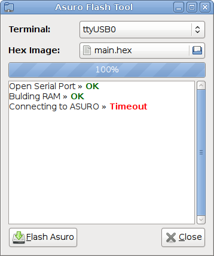

AsuroFlash
AsuroFlash is port of the original QtFlash to GTK. It allows transferring flash images to the Asuro Robot produced by Arexx.

It has the following additions to the original flasher:
- GTK UI
- USB transciever support
- stores the configuration according to the freedesktop specs
- colored console output
- console only mode
Building
this project uses CMake for building.
to build and install:
cmake .
make install
remove
rm ${CMAKE_INSTALL_PREFIX}/bin/asuroflash